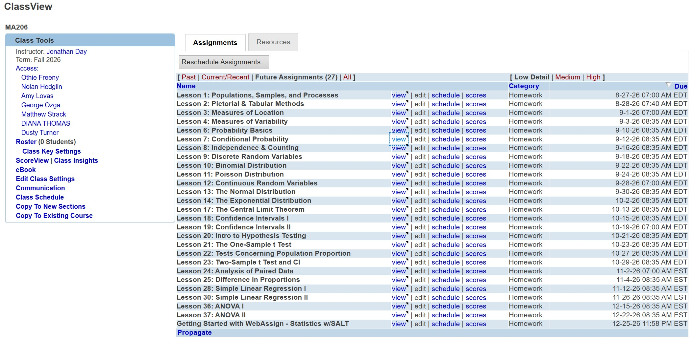

Forge 0: Reorgy Week
Welcome to MA206 for AY27-1
Team 1 Team 2
| Day 1 | TH317 | TH319 | TH321 | TH322 |
|---|---|---|---|---|
| A | Strack | Hedglin | Adams | Crow |
| B | Strack | Hedglin | ||
| C | Day | Freeny | ||
| D | Day | Freeny | Strack | |
| E | Ozga | Freeny | Lovas | |
| F | Ozga | Freeny |
| Day 2 | TH317 | TH319 | TH321 | TH322 |
|---|---|---|---|---|
| A | Strack | Thomas | Hedglin | Crow |
| B | Turner | Thomas | ||
| C | Turner | Dykhuis | Hedglin | |
| D | Turner | Dykhuis | Day | |
| E | Ozga | Adams | Lovas | |
| F | Ozga | Adams | Lovas |
Team 1 (Crow, Day, Dykhuis, Freeny, Hedglin, Strack) is free Day 2 hours B, E, F.
Team 2 (Adams, Lovas, Ozga, Thomas, Turner) is free Day 1 hours B, C, D.
Initial Thoughts
- This is a substantially rebuilt version of the course.
- We are still steering by the ASA’s GAISE College Report.
- Cadets as critical consumers of data.
- Real data with context and purpose.
- Technology to explore concepts and analyze data.
- Tintle \(\rightarrow\) Devore. Do you have Devore 9th edition?
- Supplemental readings (S1-S4)
- SILs \(\rightarrow\) WebAssign.
- Project: find your own data \(\rightarrow\) Vantage data.
- 30 lessons of 75 minutes \(\rightarrow\) 40 lessons of 55 minutes.
- More on this later, but this is an AI forward course.
Graded Events
| Graded Event | Points |
|---|---|
| WebAssign Homework | 150 |
| WPR I | 175 |
| WPR II | 175 |
| Project | 200 |
| TEE | 300 |
| Total | 1000 |
Course Arc
Block I: Descriptive Statistics and Probability
Lessons 1-16.

- Descriptive statistics.
- Types of data and study design (L1).
- Measures of location and variability (L2).
- Probability.
- Set theory, probability basics, counting (L3-5).
- Conditional probability and independence (L6-7).
- Random variables and distributions.
- Discrete, binomial, Poisson (L8-10).
- Continuous, normal, exponential (L11-13).
- Project.
- EDA at L14.
- Assessment.
- Cadet-led review at L15.
- WPR I at L16, covering L1-13. 175 points, 55 minutes in class, no AI.
- Cadets get the SRC, the cumulative reference card.
Guest Lecture
- COL Tim Sikora, USMA 2002, former Mathlete.
- Commander, U.S. Army Cyber Protection Brigade, Fort Gordon.
- Commander, Regimental Military Intelligence Battalion, 75th Ranger Regiment, 2019 to 2021.
- 30 September, Dean’s Hour, Robinson Auditorium.
- Note that this is day 2 of WPR I.
Block II: Statistical Inference
Lessons 17-28.

- Course lecture drop at L17.
- Sampling distributions.
- Central Limit Theorem (L18).
- Confidence intervals.
- Large sample, mean and proportion (L19).
- The t interval and sample size (L20).
- Hypothesis testing.
- Null and alternative, z test for a mean, errors and P-values (L21).
- One-sample t (L22).
- One-proportion z (L23).
- Two-sample comparisons.
- Two-sample t (L24).
- Paired t (L25).
- Two-proportion z (L26).
- Assessment.
- Cadet-led review at L27.
- WPR II at L28, covering L18-26. 175 points, 55 minutes in class, no AI.
Block III: Regression, ANOVA, and the Project
Lessons 29-40.

- Regression.
- Simple linear regression: model and least squares (L29).
- Inference on the slope, \(r\) and \(r^2\), software output (L30).
- Residual diagnostics and model adequacy (L31).
- Multiple linear regression (L32).
- Model adequacy, \(R^2\), categorical predictors (L33).
- ANOVA.
- One-way ANOVA and the \(F\) test (L35).
- Tukey multiple comparisons (L36).
- Project.
- IPR at L34.
- Project Drop at L37.
- Presentations at L38-39.
- 175 of the 200 project points land in this block, alongside new material and Thanksgiving.
- Close out.
- Cadet-led review at L40, then TEE week.
Project
More details will be published Thursday.
- Cadets run one statistical investigation all semester on real Army unit data in Army Vantage.
- Army Vantage has incorporated AI, so cadets may use AI for the analysis, the products, and the brief.
- The brief is how we see what they actually understand.
- You approve or redirect the research question at the EDA and the IPR.
- 👀 Vantage is CUI//NOFORN. 👀 What does that mean for us?
| Event | Lesson | Points |
|---|---|---|
| EDA | 14 (23-24 Sep) | 25 |
| IPR | 34 (20-23 Nov) | 25 |
| Products | 37 (3-4 Dec) | 50 |
| Brief | 38-39 (7-10 Dec) | 100 |
| Total | 200 |
WebAssign
Pivot away from SILs.

- Grading policy
- Due Dates
- Leniency
- AI (Artificial Intelligence)
Resources
- Canvas.
- Let’s take a tour.
- SharePoint.
- Instructor materials for AY27-1 under
AY27-1 MA206 > Instructor Materials.
- Instructor materials for AY27-1 under
BREAK
Forge: Lesson 1
Types of Data and Study Design. Read 1.1, 1.2, S1.
Coverage Plan
| Out | Section | Mon 17 Aug 1-1, L1 |
Tue 18 Aug 2-1, L1 |
Wed 19 Aug 1-2, L2 |
Thu 20 Aug 2-2, L2 |
Fri 21 Aug 2-3, L3 |
|---|---|---|---|---|---|---|
| Lovas | Day 1 hour E, TH321 | Turner | no class | Turner | no class | no class |
| Lovas | Day 2 hour E, TH321 | no class | Day | no class | Day | Day |
| Lovas | Day 2 hour F, TH321 | no class | Day | no class | Day | Day |
Using AI
Give cadets a prompt to start from.
Can you help me with this problem? I’ll give you my answers and I want you to figure out what I did wrong. If I’m stuck, give me small hints to move me along. Don’t give me the right answer until I get it myself, then help me validate my understanding.
Emphasize
Hit these in class.
- Categorical versus numerical, and within numerical, discrete versus continuous. Rounds fired on a range day is numerical and discrete. Time to finish a ruck is numerical and continuous. Branch is categorical.
- Parameter versus statistic, and the population it came from versus the sample. The average ACFT score of the cadets you sampled is a statistic. The average across the whole Corps is the parameter you will never see.
- Observational study versus designed experiment. Random assignment is the tell. Assigning squads at random to two training plans is an experiment. Comparing squads that already picked their own plan is observational.
- Skew, from summary statistics and from a density curve. Mean above median is right-skewed, below is left-skewed, equal is symmetric. Same idea on a curve: the tail names the direction, not the tall side. A few very long repair times pull the mean above the median, so the distribution is right-skewed. A density that climbs across its support piles the area on the right, so the long tail runs left. That is left skew even though the picture goes up.


Things to Cover in Week 1
- Honor brief (Will get that published)
- AI Validation Exercise
- Get into Vantage (Thursday )
- Check in on WebAssign
- Check / prep your classroom
To Do
- Familiarize yourself with WebAssign
- Get into Vantage
- Send your introduction email
- Get a copy of Devore 9th edition
- Read the supplemental readings (S1-S4)
- Put your sections on your Outlook calendar (instructions)
- Confirm your WebAssign roster and open Lesson 1 in student view
- Skim the GAISE College Report